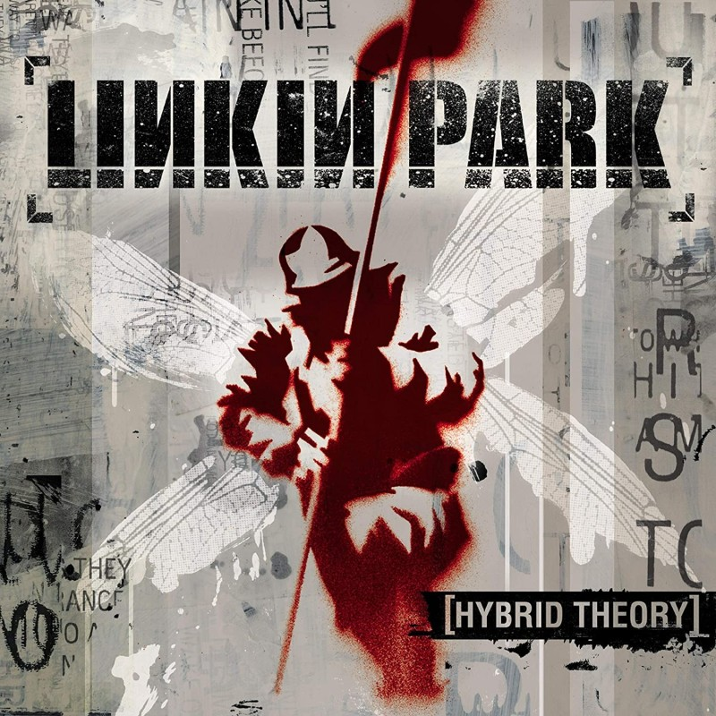
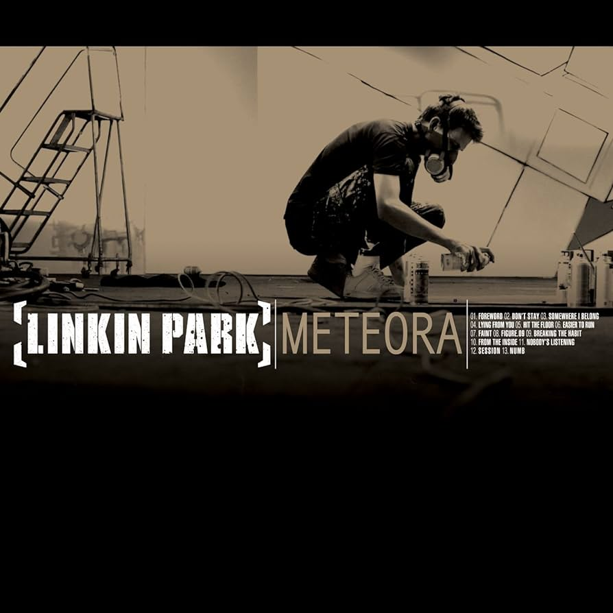
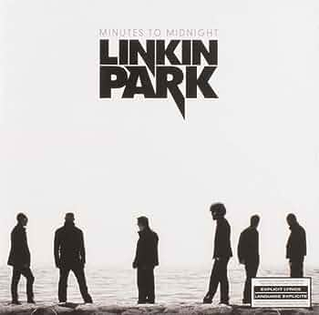
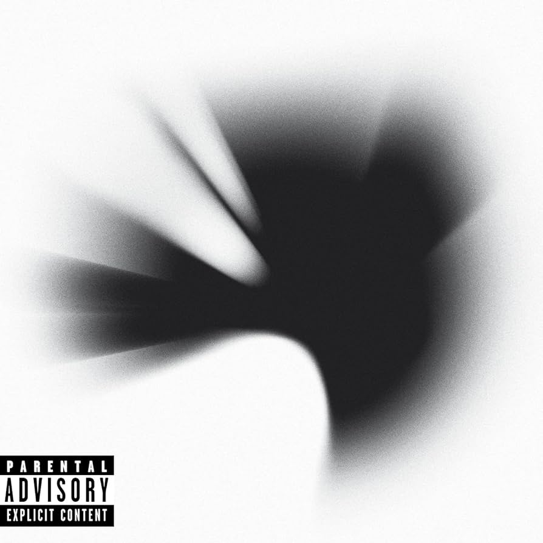
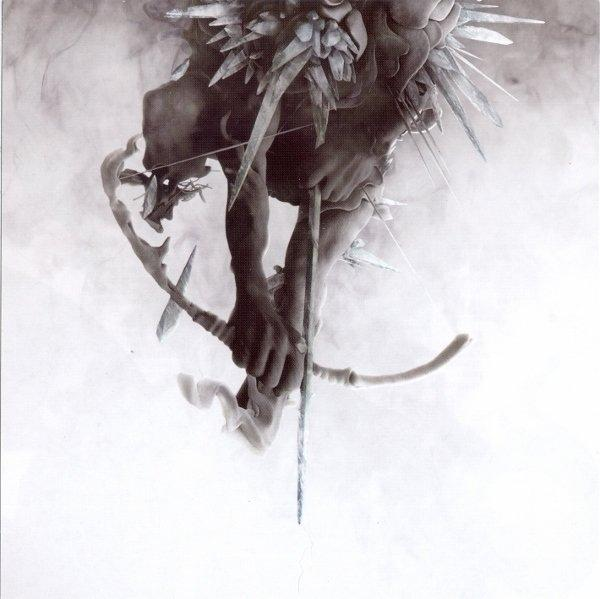

Hybrid Theory

Primer disco de Linkin Park, y con el que saltaron a la fama, publicado el 24 de octubre del 2000. Algunas de las canciones
más conocidas de este disco son "Crawling" o "In The End".
Una curiosidad de este disco es el rumor, posteriormente
desmentido por Mike Shinoda, de que la canción más popular del disco ("In The End") era una canción que Chester odiaba.
Mike Shinoda explicó en una entrevista en 2023 que la confusión fue creada porque Chester no quería que esta canción fuera
sacada como single, no porque no le gustara, sino porque el estilo de esta canción tiene un estilo más pop y a Chester le
apasionaba el heavy, por lo que habría elegido otra canción.
Meteora

Segundo disco de Linkin Park, publicado el 25 de marzo del 2003. Un disco parecido al anterior, pero algo más melódico y
con nuevos instrumentos. Destacó principalmente la canción "Numb", aunque otras como "Somewhere I Belong" y "Breaking the
Habit" también sobresalieron.
En marzo de 2023 se sacó una reedición del disco, por su vigésimo aniversario, con
algunas canciones inéditas. Estas canciones eran mezclas del propio 2002, cuando se estaba produciendo el álbum, que no
fueron lanzadas por diversos motivos. "Lost" fue la canción con más repercusión, provocando nostalgia en muchos fans de
Linkin Park, debido a su gran parecido con la "Numb" (razón por la que en 2003 decidieron no lanzar ambas canciones y se
decantaron por "Numb").
Minutes to Midnight

Tercer disco de Linkin Park, publicado el 14 de mayo del 2007. Es un álbum que mezcla canciones potentes, como "Given Up",
con canciones algo más suaves, como "Hands Held High". Recibió críticas mixtas, con algunos críticos a favor y otros en contra.
Fue el primer disco de la banda que no fue producido por Don Gilmore.
A Thousand Suns

Cuarto disco de Linkin Park, publicado el 14 de septiembre del 2010. Fue un gran cambio en el estilo de la banda, debido a
que experimentaron con sonidos nuevos y diferentes a lo que nos tenían acostmbrados.
El título proviene de una cita
del texto sagrado hinduista Bhagavad Gītā. Dicha cita la comentó Oppenheimer tras crear la bomba atómica y dado que el
disco trata sobre el miedo a una guerra nuclear, decidieron utilizarla como título.
Living Things

Quinto disco de Linkin Park, publicado el 26 de junio del 2012. Mezcló el estilo rap rock de Hybrid Theory y la electrónica
de A Thousand Suns para crear un sonido original.
"Burn It Down" se considera uno de los mejores singles de la banda,
a pesar de que, en mi opinión personal, el resto del álbum tienes que estar en una mentalidad muy específica para apreciarlo.
The Hunting Party

Sexto disco de Linkin Park, publicado el 13 de junio del 2014. Álbum con el que retrocedieron un poco en el tiempo, acercándose
más a un álbum de rock puro, eliminando gran parte del componente electrónico que habían añadido en anteriores.
One More Light

Séptimo y último disco de Linkin Park, publicado el 19 de mayo 2017. Álbum muy melódico, en el que la banda realizó un disco
muy diferente a todos sus trabajos anteriores. Esto les costó una gran cantidad de críticas por fans amantes del rock y el
heavy, argumentando que se habían vendido a lo "mainstream".
Destacaron canciones como "Heavy" o "One More Light" (pista
que le dió nombre al disco).